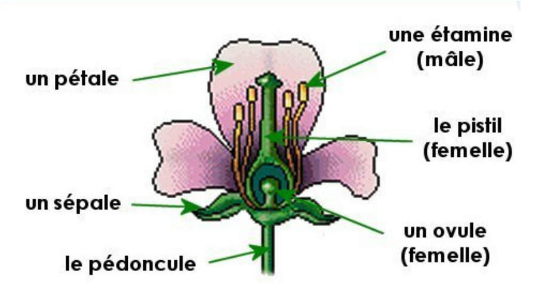

Tp Iris#
import numpy as np
import matplotlib.pyplot as plt
import seaborn as sns
from MyKNNLIB import *
from MyKNNLIB import predict
On importe la célèbre base de sonnées iris. Elle contient des informations sur 3 variétés : Setosa, Versicolor et Virginica. Un ensemble de fleurs a été étudié. Pour chacune on a noté les informations suivantes : longueur et largueur des sépales, longueur et largeur des pétales.
On récupère la liste des informations sur les sépales et pétales :
data = sns.load_dataset('iris')
data.head()
| sepal_length | sepal_width | petal_length | petal_width | species | |
|---|---|---|---|---|---|
| 0 | 5.1 | 3.5 | 1.4 | 0.2 | setosa |
| 1 | 4.9 | 3.0 | 1.4 | 0.2 | setosa |
| 2 | 4.7 | 3.2 | 1.3 | 0.2 | setosa |
| 3 | 4.6 | 3.1 | 1.5 | 0.2 | setosa |
| 4 | 5.0 | 3.6 | 1.4 | 0.2 | setosa |
D = data.values[:,:-1]
Y = data.values[:,-1]
D[:10]
array([[5.1, 3.5, 1.4, 0.2],
[4.9, 3.0, 1.4, 0.2],
[4.7, 3.2, 1.3, 0.2],
[4.6, 3.1, 1.5, 0.2],
[5.0, 3.6, 1.4, 0.2],
[5.4, 3.9, 1.7, 0.4],
[4.6, 3.4, 1.4, 0.3],
[5.0, 3.4, 1.5, 0.2],
[4.4, 2.9, 1.4, 0.2],
[4.9, 3.1, 1.5, 0.1]], dtype=object)
Chaque ligne de la matrice ci-dessus est l’enregistrement des données pour une fleur.
Y, len(Y)
(array(['setosa', 'setosa', 'setosa', 'setosa', 'setosa', 'setosa',
'setosa', 'setosa', 'setosa', 'setosa', 'setosa', 'setosa',
'setosa', 'setosa', 'setosa', 'setosa', 'setosa', 'setosa',
'setosa', 'setosa', 'setosa', 'setosa', 'setosa', 'setosa',
'setosa', 'setosa', 'setosa', 'setosa', 'setosa', 'setosa',
'setosa', 'setosa', 'setosa', 'setosa', 'setosa', 'setosa',
'setosa', 'setosa', 'setosa', 'setosa', 'setosa', 'setosa',
'setosa', 'setosa', 'setosa', 'setosa', 'setosa', 'setosa',
'setosa', 'setosa', 'versicolor', 'versicolor', 'versicolor',
'versicolor', 'versicolor', 'versicolor', 'versicolor',
'versicolor', 'versicolor', 'versicolor', 'versicolor',
'versicolor', 'versicolor', 'versicolor', 'versicolor',
'versicolor', 'versicolor', 'versicolor', 'versicolor',
'versicolor', 'versicolor', 'versicolor', 'versicolor',
'versicolor', 'versicolor', 'versicolor', 'versicolor',
'versicolor', 'versicolor', 'versicolor', 'versicolor',
'versicolor', 'versicolor', 'versicolor', 'versicolor',
'versicolor', 'versicolor', 'versicolor', 'versicolor',
'versicolor', 'versicolor', 'versicolor', 'versicolor',
'versicolor', 'versicolor', 'versicolor', 'versicolor',
'versicolor', 'versicolor', 'versicolor', 'virginica', 'virginica',
'virginica', 'virginica', 'virginica', 'virginica', 'virginica',
'virginica', 'virginica', 'virginica', 'virginica', 'virginica',
'virginica', 'virginica', 'virginica', 'virginica', 'virginica',
'virginica', 'virginica', 'virginica', 'virginica', 'virginica',
'virginica', 'virginica', 'virginica', 'virginica', 'virginica',
'virginica', 'virginica', 'virginica', 'virginica', 'virginica',
'virginica', 'virginica', 'virginica', 'virginica', 'virginica',
'virginica', 'virginica', 'virginica', 'virginica', 'virginica',
'virginica', 'virginica', 'virginica', 'virginica', 'virginica',
'virginica', 'virginica', 'virginica'], dtype=object),
150)
Transform={'setosa':0,'versicolor': 1,'virginica':2}
Y=np.array([Transform[y] for y in Y])
np.array(Y)
array([0, 0, 0, 0, 0, 0, 0, 0, 0, 0, 0, 0, 0, 0, 0, 0, 0, 0, 0, 0, 0, 0,
0, 0, 0, 0, 0, 0, 0, 0, 0, 0, 0, 0, 0, 0, 0, 0, 0, 0, 0, 0, 0, 0,
0, 0, 0, 0, 0, 0, 1, 1, 1, 1, 1, 1, 1, 1, 1, 1, 1, 1, 1, 1, 1, 1,
1, 1, 1, 1, 1, 1, 1, 1, 1, 1, 1, 1, 1, 1, 1, 1, 1, 1, 1, 1, 1, 1,
1, 1, 1, 1, 1, 1, 1, 1, 1, 1, 1, 1, 2, 2, 2, 2, 2, 2, 2, 2, 2, 2,
2, 2, 2, 2, 2, 2, 2, 2, 2, 2, 2, 2, 2, 2, 2, 2, 2, 2, 2, 2, 2, 2,
2, 2, 2, 2, 2, 2, 2, 2, 2, 2, 2, 2, 2, 2, 2, 2, 2, 2])
Le tableau Y indique, pour chaque numéro de ligne de D la catégorie à laquelle appartient la fleur correspondante (0 pour Setosa, 1 pour Versicolor et 2 pour Virginica).
Dit autrement, le tableau Y représente une partition de l’ensemble des données. La donnée numéro \(i\) appartient à la classe d’équivalence numéro Y[i].
Ainsi, D[i] désigne les caractéristiques longueur et largeur des sépales de la fleur \(i\), longueur et largeur des pétales; et Y[i] représente la variété à laquelle elle appartient.
Le tableau D est appelé tableau des vecteurs caractéristiques; Y est le tableau des étiquettes de classe.

Dans tout ce qui suit D désigne une liste de coordonnées de points à classifier et Y les classes connues de ces points.
Pour fixer les idées on prendra D, Y égaux aux tableaux définis ci-dessus mais ce pourrait être tout autre chose.
Question 1#
On partitionne D et Y en deux groupes selon une fonction de choix f . Pour chaque numéro de ligne de D (et donc de Y ), f décide si on considère la fleur correspondante comme appartenant aux données d’apprentisage ou aux données de test. L’idéal est que f choississe aléatoirement, mais pour contrôler nos résultats nous prenons d’abord :
f=lambda i:i%5!=0
def partitionner(D,Y,f):
TestData,TestTarget,LearningData,LearningTarget=[],[],[],[]
for i in range(len(Y)):
if f(i):
LearningData.append(D[i]);LearningTarget.append(Y[i])
else:
TestData.append(D[i]);TestTarget.append(Y[i])
return LearningData,LearningTarget,TestData,TestTarget
cette fonction prend en paramètres une matrice D de données, un tableau Y de classes de ces données et renvoie 4 tableaux :
le premier est une matrice constituée des lignes de D qui sont acceptées par la fonction f
le second est le tableau des classes correspondants aux données acceptées
les deux derniers tableaux correspondent aux données refusées et leurs classes
Les données acceptées (les deux premiers tableaux renvoyés) servent à l’apprentissage et les données refusées servent aux tests.
ensuite on convertit ces listes en des objets array pour faciliter leur exploitation
Da,Ya,Dt,Yt = convert_to_np_arrays(partitionner(D,Y,f))
Vouts trouverez la méthode convert_to_np_arrays dans la laibrarie MyKNNLIB
print(Da[:2])# 2 premières données d'apprentissage
print(Dt[:2])# 2 premières données de test
[[4.9 3.0 1.4 0.2]
[4.7 3.2 1.3 0.2]]
[[5.1 3.5 1.4 0.2]
[5.4 3.9 1.7 0.4]]
Ecrire la fonction d2(x,y) qui calcule la distance entre deux points x, y de mêmes imensions
void la définition dan dans la parie cours ou bien dans le fichier MYKNNLIB.py
d2(D[0],D[1])
0.5385164807134502
On détermine maintenant la variété de la fleur étudiée Fleur. On lui attribue la variété majoritaire parmi ses k plus proches voisins.
Ecrire la fonction qui prend en paramètre le dictionnaire des noms de classes, une liste de voisins d’un point et le nom d’étiquette majoritaire parmi ces voisins.
Fluer=[1, 4, 1, 3]
predict(Fluer,Da,Ya,d=d2,k=11)
0
Ainsi le type predit de cette fleur est 0 c’est à dire le setosa
TestData,TestTarget,LearningData,LearningTarget=convert_to_np_arrays(partitionner(D,Y,f))
model=LearningData,LearningTarget,d1_np,3
Pour testerla fiabilité du modèle on calcule la matrice de confusion dont le principe est expliqé dans la partie cours
matrice=ConfusionMatrix(TestData,TestTarget,model)
print(matrice)
[[40. 0. 0.]
[ 0. 39. 1.]
[ 0. 12. 28.]]